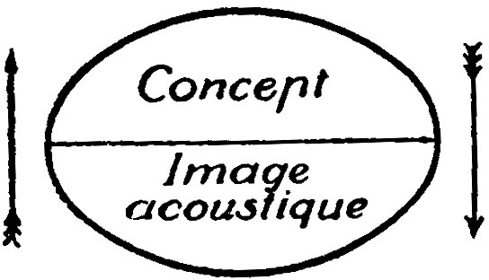
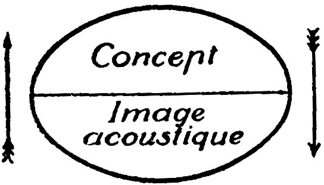

La hiérarchie sémiotique
Il est vrai que j'aurais dû créer cet article de la sémiotique avant faire trois analyses, mais, je l'ai pas fait du coup on est là. La sémiotique structurale, une branche de la sémiologie de Ferdinand de Saussure. Le concept d'un signe est l'un très importante, l'unité d'un concept et une image acoustique. À ce-moment on peut se demander sur quoi un concept porte ?
On peut concevoir une science qui étudie la vie des signes au sein de la vie sociale, et par conséquent de la psychologie générale ; nous la nommerons sémiologie (du grec sēmeîon, "signe"). Elle nous apprendrait en quoi consistent les signes, quelles lois les régissent. Puisqu'elle n'existe pas encore, on peut dire ce qu'elle sera ; mais elle a droit à l'existence, sa place est déterminée d'avance. La linguistique n'est qu'une partie de cette science générale, les lois que découvrira la sémiologie seront applicables à la linguistique, et celle-ci se trouvera ainsi rattaché à un domaine bien défini dans l'ensemble des faits humains. — Cours de linguistique générale, page 33.
Un signe se compose de deux (ou trois partie, ce qu'on fournira plus tard), le signifé et le signifiant. Comme vous pouvez voir dans l'image à droite, nous pouvons relier ces deux concepts à un concept, et un son acoustique (ce qui n'est pas nécessairement précis vu qu'il existe des langues des signes).
 


Il existe une arbitrarité entre le sé et le sant, c'est-à-dire qu'il n'y a pas de motivation à partir du sant afin d'acquèrir son sé respective. Or, il y a des exceptions comme tout tels que l'onomotopée et potientiellement Bouba/Kiki (ce qui n'est qu'une théorie au moment où j'écris). En plus, il existe plusieurs autres hypothèses transmodales dont on ne vas pas développer ici comme ils ne sont pas pertinent.
- Syntagmatique/Associatif (in praesentia / in absentia)
- La Linéarité
la linéarité du signifiant
The linearity principle is Saussure’s statement that, because linguistic signifiers are sounds (spoken words), they are intrinsically sequential (“linear”). They cannot be perceived simultaneously, the way visual signs are: they must be perceived one after the other, as a sequence in time. That principle is also carried over to writen words, as a visual representation of spoken words.
Hjelmslav
Glossematics is an expansion of Saussure’s concept of language as a dual system of meaning and form. The ultimate goal of the linguist is to gain a more perfect understanding of the whole through a thorough study of the structure of the constituent parts. To the greatest extent possible, glossematics seeks to construct a non-historical, non-sociological and non-psychological model based on language-specific principles and minimal reliance on factors external to the system. The linguist’s task, analysing texts or corpora of different languages, aims to establish a universal model of the inner workings of language by comparing the underlying meta-structures of a given language to others. Rather than separate fields of study, Hjelmslev regarded phonology, morphology, syntax, lexicology and semantics as part of the same apparatus. Glossematics is then meant to become a device which can correctly predict all grammatical sentences of any language.^[3]
Linguistics must then see its main task in establishing a science of the expression and a science of the content on an internal and functional basis… [it must become a discipline] whose science of the expression is not phonetics and whose science of the content is not semantics. Such a science would be an algebra of language.[3] — Louis Hjelmslev
Micro-codes et Langages — Les cinq traits de la structure fondamentale du langage
- Expression et Contenu
- processus et Système
- La commutation
- Combinaison/Rection
- Non-Conformité
Il ne peut y avoir langage sans que les cinq traits soient présents ensemble ; si nous soupçonnons une structure quelconque d'être un langage, il nous faut vérifier la présence de ces traits, et s'il en manque un seul nous devrons alors exclure la structure considérée de la classe des langages et la voir comme une structure non linguistique. Mais si on peut se permettre de parler de la base de la structure de base, ce sont les deux traits étudiés (1 & 2?) les premiers qui forment cette base. — Prolégomènes à une théorie du langage, page 213.
Nous allons appliquer les cinq traits en analysant le micro-code des feus de signalisation à chaque sous-chapitre
Expression et Contenu
Ce qui est le plus important c'est que, même si nous éliminons le locuteur et l'auditeur, cela ne nous permettrait pas de réduire le langage à une simple expression. Le contenu est le complément nécessaire de l'expression. Le langage reste double, c'est une structure à deux faces, comportant contenu et expression. Le les appellerai les deux plans du langage. Hjelmslev propose qu'un linguiste doit étudier l'expression et le contenu plutôt que la phonetique et la sémantique.
Hjelmslev famously renamed signifier and signified as respectively expression plane and content plane, and also distinguished between form and substance
E (R) C = dénotation
/chien/ (R=dénotation) « animal + mammifère + à quatre pattes »
[E (R) C] (R) C = Connotation
[ /chien/ (R= dénotation) « animal mammifère à quatre pattes »] (R= connotation) « fidélité »
However, this is beside the main point, which is that we always analyze a semiotic object (usually a text) uniformly, with an initial distinction between two components. In other words, for Hjelmslev, as for Saussure, neither expression nor content can be given predominance; they must both be analyzed together (Hjelmslev, 1928, p. 88).
Dans l'analyse du feu de signalisation, nous pouvons dire que les couleurs sont les signifiants, l'expression, puisque c'est celles-ci qui propagent le contentu : partez, attention, arrêtez-vous.
| Expression | Contenu |
|---|---|
| Verte | Partez |
| Jaune | Attention, il faut s'arrêter |
| Rouge | Arrêtez-vous |
processus (texte) et Système (langue)
La corrélation entre deux nouveaux aspects distincts que l'on appellera le processus et le système. Le prof appelle ces deux aspects les axes du langage : dans tout langage et dans toute structure similaire il y a un axe du processus, qu'il est commode de représenter par une ligne horizontale orientée vers la droite, et un axe de système, que l'on peut représenter par une ligne verticale coupant la première :
L'axe de processus refléte une manifestation linéaire dans l'espace et dans le temps. C'est pour cette raison qu'on a la tendance de représenter le processus (ou le texte) par une ligne, et qu'on l'orientate de gauche à droite, la façon natural qu'on représent le texte en occidentie, tout ça implique que l'axe de processus est syntagmatique.
fonction maybe of jakobsen ? émotive etc..
Les trois relations de fonctions syntagmatiques (et)[1] :
| et ceci et cela, nécessairement | constante ↔ constante | fonction de solidarité |
| et ceci et cela, sans nécessité | variable – variable | fonction de combinaison |
| quand ceci, alors nécessairement cela aussi | variable → constante | fonction de sélection |
Une phrase verbale est la relation nécessaire entre un syntagme nominal et un syntagme verbal ; ceux-ci sont les deux constantes syntagmatiques de la phrase. Il n’y a pas en revanche de relations régulières entre les catégories du verbe et de l’adverbe : le verbe peut être présent sans l’adverbe, et l’adverbe peut déterminer autre chose qu’un verbe (par exemple un adjectif, tel que très dans très beau) ; verbe et adverbe sont des variables l’un pour l’autre. Par contre, l’article appelle nécessairement un substantif, mais le contraire n’est pas vrai ; le substantif est, dans cette relation, la constante et l’article, la variable.
Du point de vue syntagmatique, expression et contenu sont toujours solidaires : si l’analyse dégage un plan d’expression pour un objet donné, alors elle doit également dégager un plan de contenu, et inversement, sans quoi l’objet ne serait pas un objet sémiotique (ce qu’on n’est pas censé savoir avant d’avoir procédé à son analyse).
Les trois relations de fonctions paradigmatiques (ou)[2] :
| ou ceci ou cela, exclusivement | constante ↓ constante | fonction de complémentarité |
| ou ceci ou cela, indifféremment | variable ↑ variable | fonction d’autonomie |
| ou ceci, ou plus particulièrement cela | constante –| variable | fonction de spécification |
Par exemple, en français, le masculin et le féminin sont deux constantes (de contenu) en ce qui concerne les êtres animés. En revanche, à l’égard des êtres inanimés, ils sont généralement regardés comme des variables ; aussi parle-t-on des villes, qui n’ont pas de genre grammatical désigné, tantôt au féminin tantôt au masculin. Enfin, par rapport à la classe même du sexe, ils présentent chacun une variable, le sexe étant alors posé comme la constante de contenu.
Naturellement, la linguistique vise d’abord à l’établissement des constantes, soit dans un rapport de complémentarité, soit dans un rapport de spécification. Du point de vue paradigmatique, le plan d’expression et le plan de contenu sont ainsi en sémiotique (par exemple, dans une langue verbale) complémentaires, alors que dans un système symbolique (par exemple, dans un langage de programmation informatique) ils sont autonomes.
http://www.revue-texto.net/Inedits/Kyheng/Kyheng_Hjelmslev.html#1. processus (hiérarchie relationnelle) et de système (hiérarchie corrélationnelle),
Le processus est la séquence, c'est-à-dire son ordre dans l'espace est dans le temps. Dans ce cas, au moins en France c'est : Verte -> Jaune -> Rouge. Le système est la façon dont le processus se repete, dans ce cas il recommence au verte en continuant le même processus ci-dessus.
───────────────⟶ Syntagmatique
│verte -> jaune -> rouge.
│verte -> jaune -> rouge.
│verte -> jaune -> rouge.
↓
Paradigmatique
───────────────⟶ Syntagmatique
│verte.
│jaune.
│rouge.
↓
Paradigmatique
La Commutation
Le contenu de signe et les expressions de signe peuvent donc être analysés en composants de signe, c'est-à-dire en contenus qui ne sont pas liés à une expression précise, et en expressions qui ne sont pas liées à un contenu précis ; et ces composantes de signe peuvent commuter.
commutation is when content is not linked to a single precise expression i.e. it can commute between different expressions (and vice-versa) \n\ = [n] or [l] commutation du contenu d'expression \n.
L'existence de composantes de signes commutables est un fait courant dans les langages passe-partout. — Prolégomènes à une théorie du langage, page 218-219.
Il existe plusieurs types de mutation, on peut assigner le fait du manque de changement du sens à celles de variants, contraire à celle d'invariant qui change le sens.
| variants | invariant | |
|---|---|---|
| syntagmatique | déplacement | permutation |
| paradigmatique | substitution | commutation |
Les différentes mutations dans le cas de feu de signalisation :
Le déplacement : N'existe pas dans ce cas car il n'y a pas de un autre ordre qui ne change pas le sens.
Le substitution : Le couleur bleu est employé à la place de vert en étant synonymique.
Le permutation : Le changement de l'ordre en changant le sens.
Le commutation : Le couleur bleu est employé à la place de rouge en n'étant pas synonymique, ce qui change le sens.
La commutation donc n'existe pas puisque pas toutes les mutations est observable, nous pouvons donc conclure déjà que le feu de signalisation n'est pas langagier.
Combinaison et Rection
Ce quatrième trait fondamental est l'existence de relations bien définies entre les unités linguistiques. Comme nous l'avons remarqué, on peut parler de ces relations en termes de combinaison et de rection. Il y a rection quand une unité en implique une autre, de telle sorte que l'unité impliquée est une condition nécessaire pour que l'unité qui l'implique soit présente. — Prolégomènes à une théorie du langage, page 226-227.
La combinaison et la rection sont les deux manières d’agencer les éléments dans le processus et donc deux déterminations de la fonction de relation et. Plus précisement, la combinaison indique une relation syntagmatique libre selon les règles d’enchainement des éléments de l’expression ou du contenu. Tandis que, la rection indique une relation syntagmatique nécessaire selon la succession logique, par exemple : si l’élément X, alors à suivre les éléments Y. C'est-à-dire que les concordances et la syntaxe relèvent de la rection, l’agencement des éléments phonologiques et de la sémantique relèvent de la combinaison.
Dans le cas de feu de signalisation, les éléments concérnées sont : verte (et) jaune (et) rouge. Nous ne pouvons que trouver une relation de la rection en : si verte alors jaune, si jaune alors rouge, si rouge alors verte.
Non-Conformité
Puisque tous les langues passe-partout se rangent dans le second cas, il faut considérer la non-conformité comme le cinquième trait fondamental de la structure de base du langage. Le fue de signalisation et l'horloge simple qui ne sonne que les heures ne sont pas des langages. — Prolégomènes à une théorie du langage, page 230.
Il est vrai que Hjelmslev affirme par la suite que les plans sémiotiques doivent aussi être non conformes l’un à l’autre, sans quoi leur distinction est rendue caduque (Hjelmslev, 1971 : 141).
Signes plus petits et autonomes (homoplane/hétéroplane), en gros they need to be autonome to be part of « langage » selon les 5 traits de Hjelmslav — traffic light colours ain't particularly autonomous.
red can be used on its own
red only means stop in this context
it cannot without the context of a traffic light, meaning it does NOT have non-conformité, meaning it is not une partie de langage.
More positively Hjelmslev has made progress in clarifying Saussure’s distinction between langue and parole. For Saussure erred in privileging the spoken word at the level of parole, and Hjelmslev’s use of ‘text’, or ‘process’ adds to the rigour of the description. On the other hand, by defining ‘system’ (Saussure’s langue) as being independent of ‘text’, Hjelmslev seems to be saying that language is essentially a system – for while a language without a text is ‘imaginable’; a text without a language is not. The risk comes in reducing language as such to a linguistic model of it, instead of recognising that the two levels (model and usage) are inseparable from one another.
Propp
« = » — i assume its just a combination of them that isnt explicilty a combination alrdy like KF
[3] Hjelmslev, Louis (1969) [First published 1943]. Prolegomena to a Theory of Language. University of Wisconsin Press. ISBN 0299024709.
[1] http://www.signosemio.com/hjelmslev/hierarchie-semiotique.asp